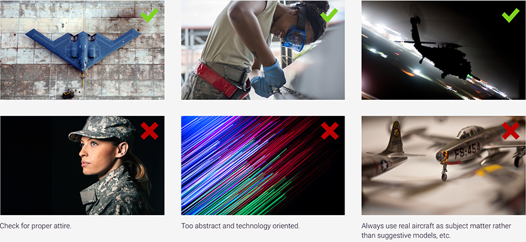

4.10 Imagery
Worth 1000 Words
Images are a highly effective way to communicate information and evoke emotions. In more editorial layouts, images are useful for breaking up copy and reinforcing narrative points. In data visualizations (a matrix of aircraft types, for instance), they can improve scannability and actually increase the efficiency of a platform.
Imagery
Images aren’t just decoration, but tools for encouraging certain user behavior and response. Whether for orientation or texture, they should follow best practices:
- Images should have purpose. Though it may be tempting to “decorate” a text- or data-heavy page, introducing purely decorative images may inadvertently distract from key user tasks and unnecessarily increase the page’s file weight. Images should do what could not be done otherwise, or done more efficiently than if done
in text.
- Reinforce the user experience. The aesthetic of a layout should serve the intent of the UX design, particularly when images can be used as a shorthand in the display of information.
- Direct the eye toward key layout elements. The subject and composition of an image can help move the eye toward important components, such as mandatory fields and calls-to-action. Human subjects in images should “look at” those components, rather than looking away. Likewise, jets should “fly toward,” lines should “point,” etc.
- Illustrate concepts. The most useful images illustrate concepts too cumbersome to put into words. If text describes at length something in terms of its appearance, that’s often a cue to use an image instead.
- Avoid placing key copy in an image. From a technical perspective, text in an image introduces an accessibility risk. It is unrecognizable by automated screen readers, and may be made illegible during the image optimization process. It also eliminates searchability and copy-paste functionality. There are exceptions, of course, such as in cases of inline labels and platform limitations.
Naturally, images should also follow best practices of contrast, composition, and standards set by USAF
design guidelines.

With a few exceptions (such as .SVGs for icons) virtually all digital image assets will be in the RGB raster formats of .JPG, .PNG, and .GIF, which each have slightly different properties and merits. In short:
- .JPG formats compress image information to a very small file size, but at the cost of a permanent loss in image quality (a “lossy” image that results in more noticeable .JPG “artifacts” the smaller the file size).
- .PNG formats compress image information without a loss in image quality, and also support a transparency layer – useful for placing the image atop textured or colored backgrounds. .PNGs are most useful for web / digital formats but tend to have a larger file size.
- .GIF formats compress image information by reducing the total number of colors. .GIFs support transparency, and also multi-frame animations. As an older technology, they are usually only used in limited circumstances.
When evaluating your optimization method, consider the nature of the image and most important characteristics. Is the priority the crispness / quality of the image? The smallest possible file size? Is there a production requirement that requires transparency? In what context and on what device will the user be viewing the image?
When in doubt, attempt to optimize for the smallest possible file size without an obvious loss in visual quality.
References